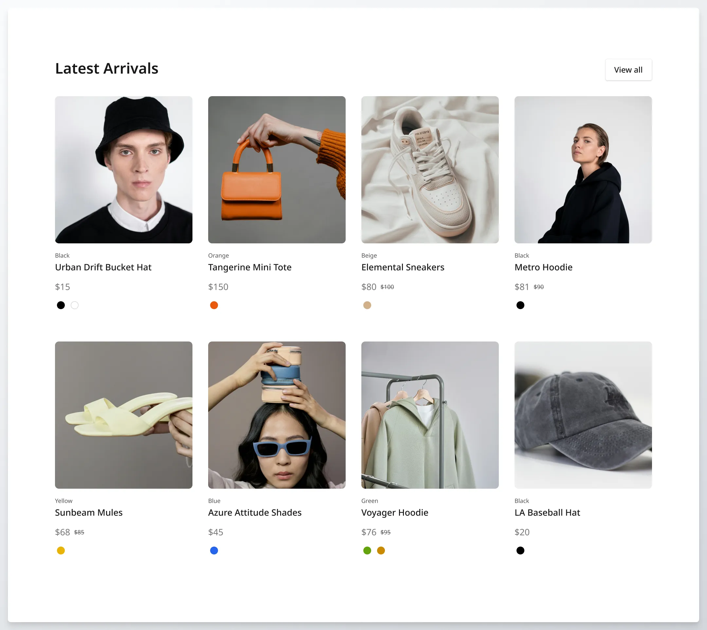

Tyler Haleblian
Contact Tyler Haleblian
Tyler Haleblian
Athens, GA 30605 |
(678) 599-3778 |
thaleblian@gmail.com
Management Information Systems student with a focus on data analytics and
a minor in computer science, seeking opportunities to apply technical and
analytical skills in real-world projects.
Education
University of Georgia
3.6
Bachelor of Business Administration in Management Information Systems
(Data Analytics Emphasis, Minor in Computer Science)
2026
Honors and Awards
ZELLE Scholarship
2022-2026
Lean Six Sigma Yellow Belt Certification
2024
Microsoft Office Specialist Certification
2022
Skills
Python
Java
R
MySQL
Tableau
Excel
SAP Signavio
Microsoft Office
Leadership and Experience
Serve UGA — Volunteer
Present
Society for Management Information Systems — Member
Present
Terry College of Business Professional Development Events — Participant
Present
Bradshaw Farms — Maintenance Crew
Summer 2024
Eden’s Keepers — Landscaper
Summer 2024 – Summer 2025
Projects
Financial Statement Analysis Project (FINA 3000)
Analyzed Exxon Mobil and Chevron financial statements using Excel.
Calculated key financial ratios including current ratio and ROE.
Presented investment recommendations supported by data analysis.
Information Systems Business Project (MIST 2090)
Designed a mobile application to improve the restaurant dining experience.
Included features such as seating availability, ordering, and payment.
Developed and presented a business case for the application.
Database Management Project (MIST 4600)

Built a relational database for an e-commerce clothing store.
Used SQL queries to manage orders, customers, and transactions.
Simulated real-world business operations to demonstrate scalability.